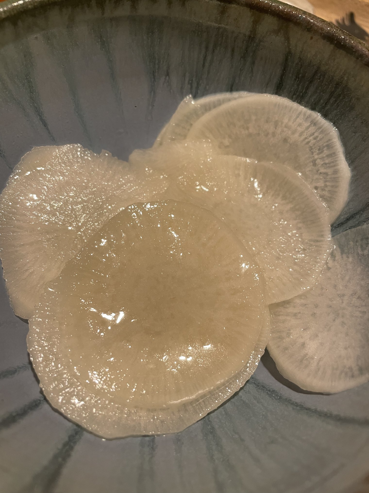

Rábano negro con vinagreta de miel
Ingredientes
2×
- 1 rábano negro
- 1 cdta de miel
- 1 cda de vinagre
- 2 cdas de aceite de oliva
- sal
- pimienta

Preparación
Paso 1
Pelar 1 rábano negro y cortarlo en rodajas muy finas.
Paso 2
Mezclar 1 cdta de miel, 1 cda de vinagre, 2 cdas de aceite de oliva, sal y pimienta.
Paso 3
Aliñar el rábano con la vinagreta y dejar marinar 10min antes de servir.
Resumen
1 rábano negro
Pelar cortarlo
1 cdta de miel
1 cda de vinagre
2 cdas de aceite de oliva
sal
pimienta
Mezclar
Aliñar marinar